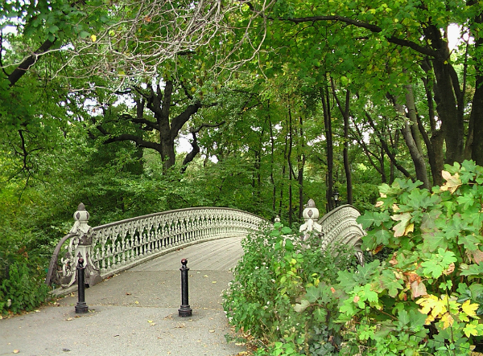
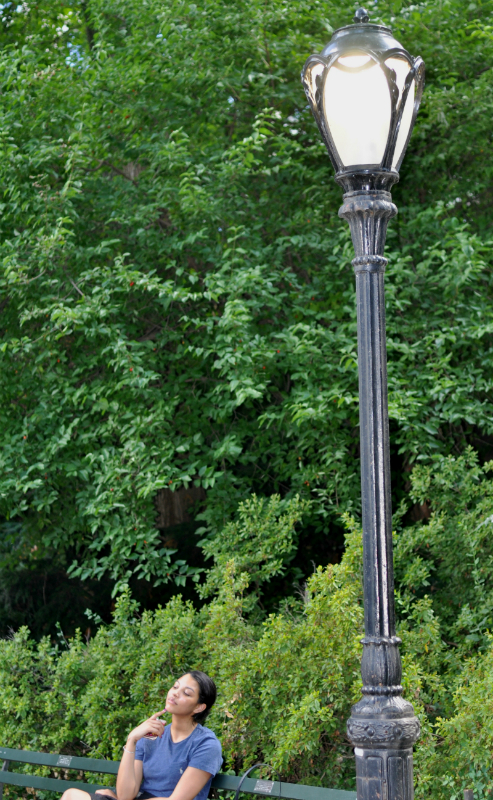
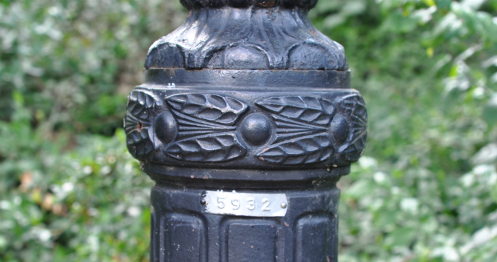

Central Park is the most visited park in the United States, and like its name suggests it is centrally located on the island of Manhattan. Though, it is visited by some 40 million visitors each year, Central Park holds many secrets in its 843 acres.
The sprawling park that stretches 51 blocks from 59th Street to 110th Street, can quickly become overwhelming and difficult to navigate. But, it is important to note that, even though the park may feel like a nature preserve far from the concrete sprawl of New York City, it is still a part of the Manhattan grid. Keeping this in mind makes navigating the park that much easier.
The park was designed and constructed by Frederick Law Olmstead and Calvert Vaux over the course of 15 years after winning a design contest to expand a smaller, little used park. The city of New York purchased the land originally from 59th Street to 106th Street and opened the design of the park to a competition to create a space to rival the great gardens and urban parks of Europe.
Throughout the park are cast iron lamps designed by Henry Bacon in 1907. These lamps not only illuminate the pathways through the park, but also illuminate where you are in the park.
At the base of each lamp is a four digit number corresponding to that location in the park. The first two numbers correspond to the street as it would be if the street continued through the park. The last two numbers indicate the east and west side of the park: even numbers are on the east side of the park; odd numbers are on the west side of the park. The lamp below, for example, is located along 59th Street on the east side of the park.
